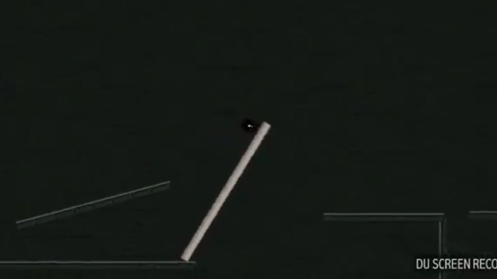
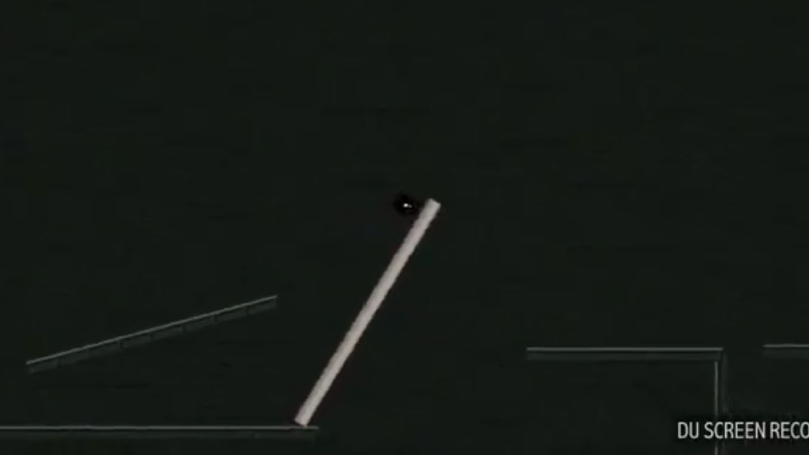

Tech:
Javascript - ES6 - Node - Express - React - React Router - Bootstrap - SASS - HTML5 - CSS3 - Passport - Mocha - Enzyme - Should - Webpack - Babel - USDA Nutrient API
NuTrack is a web application made with Node, MongoDB, React, and Express, among other technologies. It also has tests(still incomplete) written with Enzyme, Chai, and JSDom to ensure it works as intended in all scenarios, CSS3 styles compiled with SASS, Bootstrap to simplify the process of making responsive layouts, and many other libraries(but not too many, at least compared to most modern javascript projects!) to provide additional functionalities.
My original goal with this web app was to learn some new libraries to add to my existing javascript/web dev skills, but it quickly turned into a much larger and more serious project. I started using the app myself to track my calorie intake and make sure I was eating enough, and I really enjoyed how it tracked other nutrients and vitamins automatically, which actually prompted me to become more aware of my diet and improve my eating habits. I became much more concerned with the features and usability of the app after I started using myself, and started adding features and improving the UI to turn it into something closer to a commercial web application. I still have a lot of planned features that I'm actively working on implementing and have a long way to go, but I'm pretty proud of how advanced and useable NuTrack has become already
Right now, NuTrack users can search the USDA Nutrient Database, get nutrition information for any product/item, create and save meals/recipes by combining multiple items and choosing an amount or # of servings for each one, view Nutrient Tables for saved meals or individual items, Add any items or meals to their Tracker or Planner, setting the date, time, and amount, view the items and meals they've eaten over any time period they choose via the Tracker and see their nutrient totals over that time period, and do the same thing with the Planner to view their nutrition plan over any time period. There are many other smaller features, and many more on NuTracks to-do list, but that's the gist of the app. I have many more features I plan on implementing soon, the one I am most excited about is OCR(optical character recognition) - to allow users to snap a photo of an items nutrition facts label and have the site automatically process it and extrac the text to gather the nutrient information and add the item to the sites nutrient database(for items not in the USDA database). I hope that once I get through my to-do list, NuTrack will be ready to be released as a commercial web-app that helps many users become more aware of their eating habits and offer helpful insights to help them improve their diets.
NuTrack is a Single-Page Web Application made with Node, MongoDB, Express, and React. It retrieves nutrient data on the backend from the USDA Nutrient Data API and serves it with it's own custom API that adds many more features. The purpose of the app is to provide a flexible and easy-to-use tool that users can use to plan their food/nutrient consumption and track their progress. When I first started the project my plan was to make something with the USDA API mostly just to practice and learn some new technologies, but before long I ended up finding my own uses for the App and coming up with tons of useful new features that I wanted to add, and the project soon become something much larger and more useful than I had originally planned. I use it mainly to make sure I am getting enough calories to keep my weight up but it also provides other insights about my nutrition patterns automatically and has made me more aware of how my eating habits are effecting my health.
NuTrack is basically in the "Minimum-Viable-Product" phase right now, it works as a cohesive application and has many useful features, but the more I work on it the bigger my vision for the project becomes - I now have a pretty long todo-list of tweaks and new features I want to implement, some of which will improve the usability and capabilities of the app drastically. Once I implement a few of the larger, more impactful features that I have planned, I intend to set up real hosting for the app and release to the public as a commercial web app with trial accounts available for free and premium accounts available for a small monthly subscription fee. Right now I don't think NuTrack is useful enough for many people to want to pay for it; the limits of the USDA Database(mainly the lack of many popular food products) as well the lack of a few key features I plan on implementing and the mediocre, quickly made design of the current site are the only things holding it back from being a high-quality, useful, commercial web application. Luckily, all of these things are fixable - the limitations of the USDA Database will be the most difficult, but I have a fun and interesting solution planned to fix that problem.
I have a lot of features in mind to improve NuTrack and make it into a commercial web app that people really want to use(even if I release it for free or use an ad-supported model). The feature I want to talk about first is using OCR(Optical Character Recognition - a technique to convert characters in images and other non-text formats into processable text using Machine Learning and other AI techniques) to allow users to quickly snap a picture of a products nutrition label in order to use the product within the app and add it into NuTracks Nutrition Database. The nutrition database is another feature I don't have implemented yet, currently relying on the USDA's great but somewhat incomplete nutrition facts database, but it will be added alongside OCR/user created products. although I've written a very basic handwriting-recognition script in Python in the past - and the nutrition label reader should be even simpler because typed text will be easier for a computer to interpret than handwriting - I plan on using a 3rd part OCR library(probably OCRAD) for this feature because I'm sure a large library maintained by experts in OCR will be more reliable than anything I could come up, especially since I don't want to spend a ton of time reinventing the wheel just for a single feature in one of my side-projects. I will, however, probably write some of my own pre-processing code to improve the usability and accuracy of the character recognition; things such as deskewing the image to normalize the photos taken by users and remove any tilt or angle from the nutrition label image, and stripping out any non-text lines or other artifacts that may interfere with the OCR libraries functions. Implementing these image pre-processing effects should be a fun but doable challenge that will help sharpen my skills and be a rewarding problem to solve, I also think that writing this code myself is practical for the end-result because I will be able to customize the code for the exact type of images that will be submitted to the optical characeter recognition algorithm - e.g. detecting the corners of the nutrition label in a photo will be much simpler when I know exactly what the corners look like for most labels, and once I have that figured out it will just take some relatively basic math to transform the image into a perfect, proportional rectangle that will be easy for the OCR algorithm to process.
I also plan on implementing some other features and changes that aren't quite as complicated, but will improve the usability and quality of Nutrack drastically. Redoing the entire layout is one of my main goals, the current layout was designed as I implemented features without much planning ahead of time. NuTrack was originally supposed to be a very small web app I made to learn some new technology so I wasn't worried about making it look great from the start. I did go back and do a little work to make it more presentable, but I think if I put my best effort into making NuTrack look great I could greatly improve the appearance and user-experience of the app.
I have atleast half a dozen more features already on my to-do list for NuTrack, and I don't have time to explain them all, but there is one more big feature that I really want to implement because I think it'd vastly improve the usefulness of the web app. I want to incorporate some statistics and data-visualization that allows users to view their nutrition intake patterns and trends over time, for example by generating different graphs and charts showing how their daily intake of, for example - calories, has changed over time. This will be easy to integrate with the already-existing data from the Tracker and Planner features, and can be implemented in a way that is highly customizeable; optimally I would like users to be able to select which nutrients to view data for, set goals to visually compare their nutrient intake against, set the time range that the chart covers and the start/end dates, view the information in a variety of different graph/chart types, and even create projections using the data from their Tracker, Planner, and transforming it with whatever proposed diet changes they want to visualize.


 
